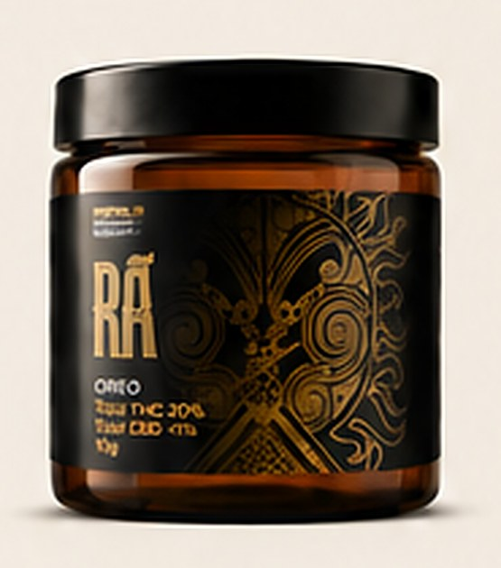
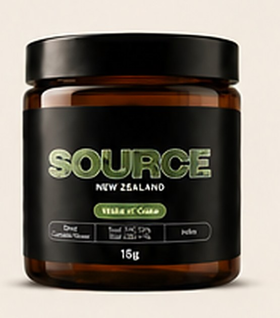

01
Greenhouse range
Medicinal flower grown in greenhouse conditions and developed to deliver dependable quality within a more efficient production model.
View products

Aho Farms is developing a portfolio of dried medicinal cannabis flower across greenhouse and indoor cultivation systems in Hawke's Bay.
Prescription Medicine: Not for general saleMedicinal flower grown in greenhouse conditions and developed to deliver dependable quality within a more efficient production model.
View products
A premium indoor-grown range focused on greater environmental control, flower finish and cultivar expression.
Learn more
Full product specifications, certificates of analysis and prescribing information are available to registered prescribers through the Aho Farms portal.
Prescription Medicine: Not for general sale